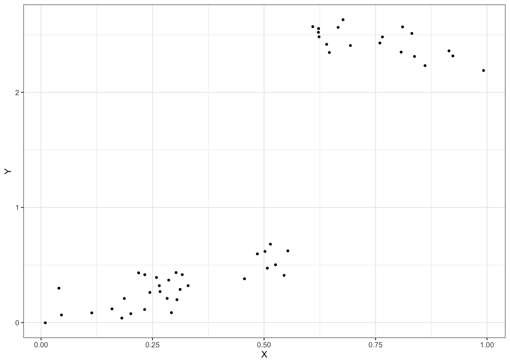
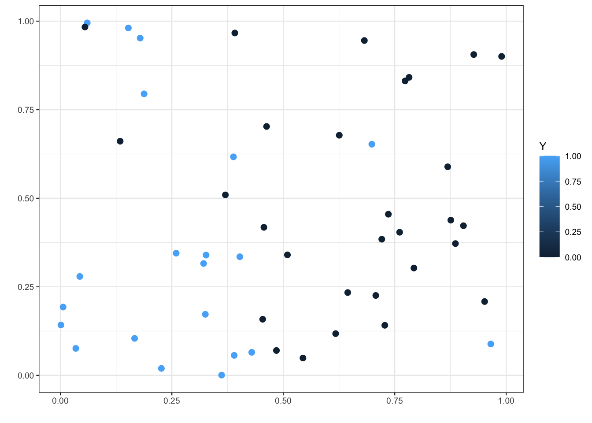
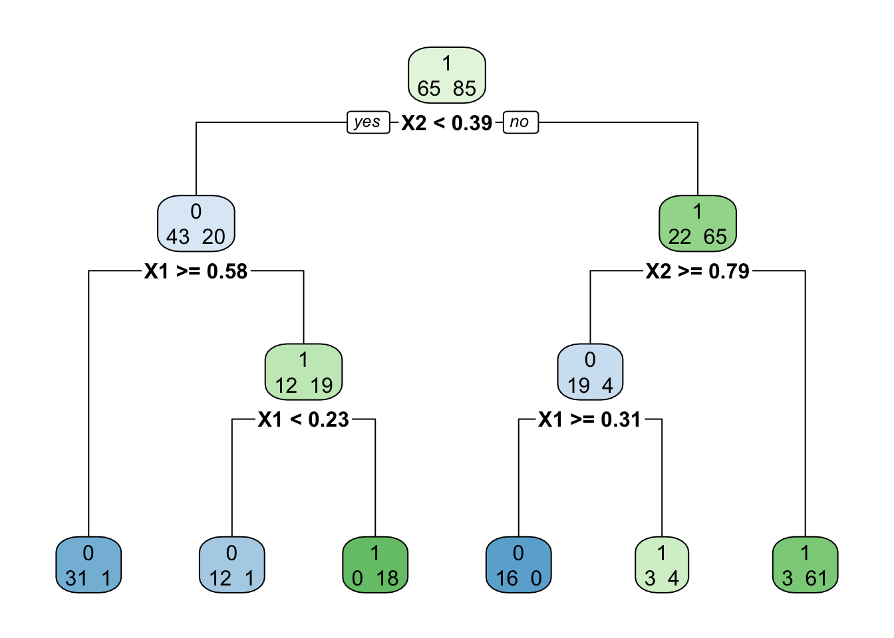

1 Arbres
Les méthodes par arbres sont des algorithmes où la prévision s’effectue à partir de moyennes locales. Plus précisément, étant donné un échantillon \((x_1,y_1)\dots,(x_n,y_n)\), l’approche consiste à :
- construire une partition de l’espace de variables explicatives (\(\mathbb R^p\)) ;
- prédire la sortie d’une nouvelle observation \(x\) en faisant :
- la moyenne des \(y_i\) pour les \(x_i\) qui sont dans la même classe que \(x\) si on est en régression ;
- un vote à la majorité parmi les \(y_i\) tels que les \(x_i\) qui sont dans la même classe que \(x\) si on est en classification.
Bien entendu toute la difficulté est de trouver la “bonne partition” pour le problème d’intérêt. Il existe un grand nombre d’algorithmes qui permettent de trouver une partition. Le plus connu est l’algorithme CART (Breiman et al. 1984) où la partition est construite par divisions successives au moyen d’hyperplan orthogonaux aux axes de \(\mathbb R^p\). L’algorithme est récursif : il va à chaque étape séparer un groupe d’observations (nœuds) en deux groupes (nœuds fils) en cherchant la meilleure variable et le meilleur seuil de coupure. Ce choix s’effectue à partir d’un critère d’impureté : la meilleure coupure est celle pour laquelle l’impureté des 2 nœuds fils sera minimale. Nous étudions cet algorithme dans cette partie.
1.1 Coupures CART en fonction de la nature des variables
Une partition CART s’obtient en séparant les observations en 2 selon une coupure parallèle aux axes puis en itérant ce procédé de séparation binaire sur les deux groupes… Par conséquent la première question à se poser est : pour un ensemble de données \((x_1,y_1),\dots,(x_n,y_n)\) fixé, comment obtenir la meilleure coupure ?
Comme souvent ce sont les données qui vont répondre à cette question. La sélection de la meilleur coupure s’effectue en introduisant une fonction d’impureté \(\mathcal I\) qui va mesurer le degrés d’hétérogénéité d’un nœud \(\mathcal N\). Cette fonction prendra de
- grandes valeurs pour les nœuds hétérogènes (les valeurs de \(Y\) diffèrent à l’intérieur du nœud) ;
- faibles valeurs pour les nœuds homogènes (les valeurs de \(Y\) sont proches à l’intérieur du nœud).
On utilise souvent comme fonction d’impureté :
la variance en régression
\[\mathcal I(\mathcal N)=\frac{1}{|\mathcal N|}\sum_{i:x_i\in\mathcal N}(y_i-\overline{y}_{\mathcal N})^2,\] où \(\overline{y}_{\mathcal N}\) désigne la moyenne des \(y_i\) dans \(\mathcal N\).
l’impureté de Gini en classification binaire
\[\mathcal I(\mathcal N)=2p(\mathcal N)(1-p(\mathcal N))\] où \(p(\mathcal N)\) représente la proportion de 1 dans \(\mathcal N\).
Les coupures considérées par l’algorithme CART sont des hyperplans orthogonaux aux axes de \(\mathbb R^p\), choisir une coupure revient donc à choisir une variable \(j\) parmi les \(p\) variables explicatives et un seuil \(s\) dans \(\mathbb R\). On peut donc représenter une coupure par un couple \((j,s)\). Une fois l’impureté définie, on choisira la coupure \((j,s)\) qui maximise le gain d’impureté entre le noeud père et ses deux noeuds fils : \[\Delta(\mathcal I)=\mathbf P(\mathcal N)\mathcal I(\mathcal N)-(\mathbf P(\mathcal N_1(j,s))\mathcal I(\mathcal N_1(j,s))+\mathbf P(\mathcal N_2(j,s))\mathcal I(\mathcal N_2(j,s))\] où
- \(\mathcal N_1(j,s)\) et \(\mathcal N_2(j,s)\) sont les 2 nœuds fils de \(\mathcal N\) engendrés par la coupure \((j,s)\) ;
- \(\mathbf P(\mathcal N)\) représente la proportion d’observations dans le nœud \(\mathcal N\).
1.1.1 Arbres de régression
On considère le jeu de données suivant où le problème est d’expliquer la variable quantitative \(Y\) par la variable quantitative \(X\).
n <- 50
set.seed(1234)
X <- runif(n)
set.seed(5678)
Y <- 1*X*(X<=0.6)+(-1*X+3.2)*(X>0.6)+rnorm(n,sd=0.1)
data1 <- data.frame(X,Y)
ggplot(data1)+aes(x=X,y=Y)+geom_point()
A l’aide de la fonction rpart du package rpart, construire un arbre permettant d’expliquer \(Y\) par \(X\).
library(rpart)Visualiser l’arbre à l’aide des fonctions prp et rpart.plot du package rpart.plot.
library(rpart.plot)Écrire l’estimateur associé à l’arbre.
On a un modèle de régression
\[Y=m(X)+\varepsilon\]
où la fonction de régression (inconnue) \(m(x)\) est estimée par
\[\widehat m(x)=0.31\, \mathbf{1}_{x\lt 0.58}+2.4\,\mathbf{1}_{x\geq 0.58}.\]
Ajouter sur le graphe de la question 1 la partition définie par l’arbre ainsi que les valeurs prédites.
On obtient une partition avec 2 nœuds terminaux. Cette partition peut être résumée par la question : “est-ce que \(X\) est plus petit que 0.58 ?”.
1.1.2 Arbres de classification
On considère les données suivantes où le problème est d’expliquer la variable binaire \(Y\) par deux variables quantitatives \(X_1\) et \(X_2\).
n <- 50
set.seed(12345)
X1 <- runif(n)
set.seed(5678)
X2 <- runif(n)
Y <- rep(0,n)
set.seed(54321)
Y[X1<=0.45] <- rbinom(sum(X1<=0.45),1,0.85)
set.seed(52432)
Y[X1>0.45] <- rbinom(sum(X1>0.45),1,0.15)
data2 <- data.frame(X1,X2,Y)
ggplot(data2)+aes(x=X1,y=X2,color=Y)+geom_point(size=2)+scale_x_continuous(name="")+
scale_y_continuous(name="")+theme_classic()
Construire un arbre permettant d’expliquer \(Y\) par \(X_1\) et \(X_2\). Représenter l’arbre et identifier l’éventuel problème.
On observe que l’arbre construit est un arbre de régression, pas de classification. Cela vient du fait que \(Y\) est considérée par R comme une variable quantitative, il faut la convertir en facteur.
Tout est OK maintenant !
Écrire la règle de classification ainsi que la fonction de score définies par l’arbre.
La règle de classification est
\[\widehat g(x)=\mathbf{1}_{X_1\lt 0.44}.\]
La fonction de score est donnée par
\[\widehat S(x)=\widehat P(Y=1|X=x)=0.83\mathbf{1}_{X_1\lt 0.44}+0.07\mathbf{1}_{X_1\geq 0.44}.\]
Ajouter sur le graphe de la question 1 la partition définie par l’arbre.
1.1.3 Entrée qualitative
On considère les données
n <- 100
X <- factor(rep(c("A","B","C","D"),n))
set.seed(1234)
Y[X=="A"] <- rbinom(sum(X=="A"),1,0.9)
Y[X=="B"] <- rbinom(sum(X=="B"),1,0.25)
Y[X=="C"] <- rbinom(sum(X=="C"),1,0.8)
Y[X=="D"] <- rbinom(sum(X=="D"),1,0.2)
Y <- as.factor(Y)
data3 <- data.frame(X,Y)Construire un arbre permettant d’expliquer \(Y\) par \(X\).
Expliquer la manière dont l’arbre est construit dans ce cadre là.
La variable étant qualitative, on ne cherche pas un seuil de coupure pour diviser un nœud en 2. On va ici considérer toutes les partitions binaires de l’ensemble \(\{A,B,C,D\}\). La meilleure partition est \(\{\{A,C\},\{B,D\}\}\).
1.2 Élagage
Le procédé de coupe présenté précédemment permet de définir un très grand nombre d’arbres à partir d’un jeu de données (arbre sans coupure, avec une coupure, deux coupures…). Se pose alors la question de trouver le meilleur arbre parmi tous les arbres possibles. Une première idée serait de choisir parmi tous les arbres possibles celui qui optimise un critère de performance. Cette approche, bien que cohérente, n’est généralement pas possible à mettre en œuvre en pratique car le nombre d’arbres à considérer est souvent trop important.
La méthode CART propose une procédure permettant de choisir automatiquement un arbre en 3 étapes :
- On construit un arbre maximal (très profond) \(\mathcal T_{max}\) ;
- On sélectionne une suite d’arbres emboités : \[\mathcal T_{max}=\mathcal T_0\supset\mathcal T_1\supset\dots\supset \mathcal T_K.\] La sélection s’effectue en optimisant un critère Cout/complexité qui permet de réguler le compromis entre ajustement et complexité de l’arbre.
- On sélectionne un arbre dans cette sous-suite en optimisant un critère de performance.
Cette approche revient à choisir un sous-arbre de l’arbre \(\mathcal T_\text{max}\), c’est-à-dire à enlever des branches à \(T_\text{max}\), c’est pourquoi on parle d’élagage.
1.2.1 Élagage pour un problème de régression
On considère les données Carseats du package ISLR.
library(ISLR)
data(Carseats)
summary(Carseats) Sales CompPrice Income Advertising
Min. : 0.000 Min. : 77 Min. : 21.00 Min. : 0.000
1st Qu.: 5.390 1st Qu.:115 1st Qu.: 42.75 1st Qu.: 0.000
Median : 7.490 Median :125 Median : 69.00 Median : 5.000
Mean : 7.496 Mean :125 Mean : 68.66 Mean : 6.635
3rd Qu.: 9.320 3rd Qu.:135 3rd Qu.: 91.00 3rd Qu.:12.000
Max. :16.270 Max. :175 Max. :120.00 Max. :29.000
Population Price ShelveLoc Age Education
Min. : 10.0 Min. : 24.0 Bad : 96 Min. :25.00 Min. :10.0
1st Qu.:139.0 1st Qu.:100.0 Good : 85 1st Qu.:39.75 1st Qu.:12.0
Median :272.0 Median :117.0 Medium:219 Median :54.50 Median :14.0
Mean :264.8 Mean :115.8 Mean :53.32 Mean :13.9
3rd Qu.:398.5 3rd Qu.:131.0 3rd Qu.:66.00 3rd Qu.:16.0
Max. :509.0 Max. :191.0 Max. :80.00 Max. :18.0
Urban US
No :118 No :142
Yes:282 Yes:258
On cherche ici à expliquer la variable quantitative Sales par les autres variables.
Construire un arbre permettant de répondre au problème.
Expliquer les sorties de la fonction printcp appliquée à l’arbre de la question précédente et calculer le dernier terme de la colonne rel error.
On peut lire des informations sur la suite d’arbres emboîtés, cette suite est de longueur 17 ici. Dans le dernier tableau, chaque ligne représente un arbre de la suite et on a dans les colonnes :
- CP : le paramètre de complexité, plus il est petit plus l’arbre est profond ;
- nsplit : nombre de coupures de l’arbre ;
- rel error contient l’erreur calculée sur les données d’apprentissage. Cette erreur décroit lorsque la complexité augmente et peut être interprétée comme une erreur d’ajustement ;
- xerror : contient l’erreur calculée par validation croisée. Elle peut être interprétée comme une erreur de prévision ;
- xstd correspond à l’écart type estimé de l’erreur.
Les types d’erreurs dépendent du problème considéré. Vu qu’on est ici sur un problème de régression, c’est l’erreur quadratique moyenne qui est considérée. De plus ces erreurs sont normalisées par rapport à l’erreur de l’arbre racine (sans coupure). Ainsi on retrouve l’erreur demandée avec
Construire une suite d’arbres plus grandes en jouant sur les paramètres
cpetminsplitde la fonction rpart.Il suffit de diminuer les valeurs par défaut de ces paramètres.
On obtient ici une suite de près de 300 arbres. On remarque que
- l’erreur d’ajustement ne cesse de décroître, ceci est logique vu le procédé de construction : on ajuste de mieux en mieux lorsqu’on augmente le nombre de coupures ;
- l’erreur de prévision décroit avant de d’augmenter à nouveau. C’est le phénomène bien connu du sur-apprentissage.
Expliquer la sortie de la fonction plotcp appliquée à l’arbre de la question précédente.
On obtient un graphe qui permet de visualiser l’erreur quadratique calculée par validation croisée (erreur de prévision) en fonction du paramètre cp ou nsplit.
Sélectionner le “meilleur” arbre dans la suite construite.
La manière classique revient à choisir l’arbre qui a la plus petite erreur de prévision. Cela revient à aller chercher dans le tableau de la fonction printcp l’arbre qiu possède la plus petite erreur de prévision. On peut obtenir la valeur optimale de cp avec
Visualiser l’arbre choisi (utiliser la fonction prune).
La fonction visTree du package visNetwork permet de donner une visualisation interactive de l’arbre.
Une application Shiny est également proposée pour visualiser les arbres
On souhaite prédire les valeurs de \(Y\) pour de nouveaux individus à partir de l’arbre sélectionné. Pour simplifier on considèrera ces 4 individus :
new_ind <- Carseats %>% slice(3,58,185,218) %>% dplyr::select(-Sales) new_indCompPrice Income Advertising Population Price ShelveLoc Age Education Urban 3 113 35 10 269 80 Medium 59 12 Yes 58 93 91 0 22 117 Bad 75 11 Yes 185 132 33 7 35 97 Medium 60 11 No 218 106 44 0 481 111 Medium 70 14 No US 3 Yes 58 No 185 Yes 218 NoCalculer les valeurs prédites.
Séparer les données en un échantillon d’apprentissage de taille 250 et un échantillon test de taille 150.
On considère la suite d’arbres définie par
set.seed(4321) tree <- rpart(Sales~.,data=train,cp=0.000001,minsplit=2)Dans cette suite, sélectionner
- un arbre très simple (avec 2 ou 3 coupures)
- un arbre très grand
- l’arbre optimal (avec la procédure d’élagage classique).
Calculer l’erreur quadratique de ces 3 arbres en utilisant l’échantillon test.
Pour chaque arbre \(T\) on calcule \[\frac{1}{n_\text{test}}\sum_{i\in \text{test}}(Y_i-T(X_i))^2.\]
On définit une table qui regroupe les prédictions des 3 arbres sur l’échantillon test :
On en déduit les erreurs quadratique
L’arbre sélectionné a ici la plus petite erreur.
Refaire la comparaison avec une validation croisée 10 blocs.
On créé tout d’abord les blocs.
On fait la validation croisée.
1.2.2 Élagage en classification binaire et matrice de coût
On considère ici les mêmes données que précédemment mais on cherche à expliquer une version binaire de la variable Sales. Cette nouvelle variable, appelée High prend pour valeurs No si Sales est inférieur ou égal à 8, Yes sinon. On travaillera donc avec le jeu data1 défini ci-dessous.
High <- ifelse(Carseats$Sales<=8,"No","Yes")
data1 <- Carseats %>% dplyr::select(-Sales) %>% mutate(High)Construire un arbre permettant d’expliquer
Highpar les autres variables (sansSalesévidemment !) et expliquer les principales différences par rapport à la partie précédente précédente.L’arbre construit est un arbre de classification. Le procédé de découpe des noeuds est différent : il utilise l’impureté de Gini au lieu de la variance.
Expliquer l’option
parmsdans la commande :tree1 <- rpart(High~.,data=data1,parms=list(split="information")) tree1$parms$prior 1 2 0.59 0.41 $loss [,1] [,2] [1,] 0 1 [2,] 1 0 $split [1] 2On change de fonction d’impureté (information au lieu de Gini).
Expliquer les sorties de la fonction printcp sur le premier arbre construit et retrouver la valeur du dernier terme de la colonne rel error.
On peut lire des informations sur la suite d’arbres emboîtés, cette suite est de longueur 17 ici. Dans le dernier tableau, chaque ligne représente un arbre de la suite et on a dans les colonnes :
- CP : le paramètre de complexité, plus il est petit plus l’arbre est profond ;
- nsplit : nombre de coupures de l’arbre ;
- rel error contient l’erreur calculée sur les données d’apprentissage. Cette erreur décroit lorsque la complexité augmente et peut être interprétée comme une erreur d’ajustement ;
- xerror : contient l’erreur calculée par validation croisée. Elle peut être interprétée comme une erreur de prévision ;
- xstd correspond à l’écart type estimé de l’erreur.
Les types d’erreurs dépendent du problème considéré. Vu qu’on est ici sur un problème de classification, c’est l’erreur de classification qui est considérée. De plus ces erreurs sont normalisées par rapport à l’erreur de l’arbre racine (sans coupure). Ainsi on retrouve l’erreur demandée avec
Sélectionner un arbre optimal dans la suite.
On considère la suite d’arbres
tree2 <- rpart(High~.,data=data1,parms=list(loss=matrix(c(0,5,1,0),ncol=2)), cp=0.01,minsplit=2)Expliquer les sorties des commandes suivantes. On pourra notamment calculer le dernier terme de la colonne rel error de la table cptable.
tree2$parms$prior 1 2 0.59 0.41 $loss [,1] [,2] [1,] 0 1 [2,] 5 0 $split [1] 1printcp(tree2)Classification tree: rpart(formula = High ~ ., data = data1, parms = list(loss = matrix(c(0, 5, 1, 0), ncol = 2)), cp = 0.01, minsplit = 2) Variables actually used in tree construction: [1] Advertising Age CompPrice Education Income Population [7] Price ShelveLoc Root node error: 236/400 = 0.59 n= 400 CP nsplit rel error xerror xstd 1 0.101695 0 1.00000 5.0000 0.20840 2 0.050847 2 0.79661 3.8136 0.20909 3 0.036017 3 0.74576 3.2034 0.20176 4 0.035311 5 0.67373 3.1271 0.20038 5 0.025424 9 0.50847 2.6144 0.19069 6 0.016949 11 0.45763 2.3475 0.18307 7 0.015537 16 0.37288 2.1992 0.17905 8 0.014831 21 0.28814 2.1992 0.17905 9 0.010593 23 0.25847 2.0466 0.17367 10 0.010000 25 0.23729 2.0297 0.17292Le critère est ici modifié, on utilise une erreur de classification pondérée pour choisir l’arbre. On rappelle que l’erreur de classification est définie par \[L(g)=P(g(X)\neq Y)=E[\alpha_11_{g(X)=0,Y=1}+\alpha_21_{g(X)=1,Y=0}]\] avec \(\alpha_1=\alpha_2=1\). Cette erreur donne donc le même poids aux deux erreurs possible (prédire 1 à tort ou prédire 0 à tort). Utiliser cette erreur revient donc à supposer qu’elles ont la même importance pour le problème considéré. Ce n’est bien entendu pas toujours le cas en pratique. La matrice loss contient les valeurs de \(\alpha_1\) et \(\alpha_2\) et modifier ces valeurs permettra de donner des poids différents à ces deux erreurs.
Avec cette nouvelle commande, on donne un poids de 5 pour une erreur et de 1 pour l’autre. On obtient le terme demandé avec
Comparer les valeurs ajustées par les deux arbres considérés.
Il y a plus de
Yesprédits dans le second arbre. Cela vient des changements dans la matrice loss : la perte pour prédireNoau lieu deYesest de 5 pour le second arbre. Cela signifie bien détecter lesYesest plus important pour cet arbre, c’est donc tout à fait normal qu’il prédise plus souventYesque le premier.Cette stratégie de changer la matrice de coût peut se révéler intéressante dans le cas de données déséquilibrées : une modalité de la cible sous-représentée par rapport à l’autre. En effet, pour de tels problèmes il est souvent très important de bien détecter la modalité sous-représentée. On pourra donc donner un poids plus fort lorsqu’on détecte mal cette modalité.
1.2.3 Calcul de la sous-suite d’arbres optimaux
Exercice 1.1 (Minimisation du critère coût/complexité) On considère l’algorithme qui permet de calculer les suites \((\alpha_m)_m\) et \((T_{\alpha_m})_m\) du théorème présenté en cours. Pour simplifier on se place en classification binaire et on considère les notations suivantes (en plus de celles présentées dans le chapitre) :
- \(R(t)\) : erreur de classification dans le nœud \(t\) pondérée par la proportion d’individus dans le nœud (nombre d’individus dans \(t\) sue le nombre total d’individus).
- \(T^t\) : la branche de l’arbre \(T\) issue du nœud interne \(t\).
- \(R(T^t)\) : l’erreur de la branche \(T^t\) pondérée par la proportion d’individus dans le nœud.
L’algorithme suivant présente le calcul explicite des suites \((\alpha_m)_m\) et \((T_{\alpha_m})_m\).
Initialisation : on pose \(\alpha_0=0\) et on calcule l’arbre maximale \(T_0\) qui minimise \(C_0(T)\). On fixe \(m=0\). Répéter jusqu’à obtenir l’arbre racine
- Calculer pour tous les nœuds \(t\) internes de \(T_{\alpha_m}\) \[g(t)=\frac{R(t)-R(T_{\alpha_m}^t)}{|{T_{\alpha_m}^t}|-1}\]
- Choisir le nœud interne \(t_m\) qui minimise \(g(t)\).
- On pose \[\alpha_{m+1}=g(t_m)\quad\text{et}\quad T_{\alpha_{m+1}}=T_{\alpha_m}-T_{\alpha_m}^{t_m}.\]
- Mise à jour : \(m:=m+1\).
Retourner : les suites finies \((\alpha_m)_m\) et \((T_{\alpha_m})_m\).
On propose d’utiliser cet algorithme sur l’arbre construit suivant
gen_class_bin2D <- function(n=100,graine=1234,bayes=0.1){
set.seed(graine)
grille <- 0.1
X1 <- runif(n)
X2 <- runif(n)
Y <- rep(0,n)
cond0 <- (X1>0.2 & X2>=0.8) | (X1>0.6 & X2<0.4) | (X1<0.25 & X2<0.5)
cond1 <- !cond0
Y[cond0] <- rbinom(sum(cond0),1,bayes)
Y[cond1] <- rbinom(sum(cond1),1,1-bayes)
donnees <- tibble(X1,X2,Y=as.factor(Y))
# indapp <- 1:napp
# dapp <- donnees[indapp,]
# dtest <- donnees[-indapp,]
px1 <- seq(0,1,by=grille)
px2 <- seq(0,1,by=grille)
px <- expand.grid(X1=px1,X2=px2)
py <- rep(0,nrow(px))
cond0 <- (px[,1]>0.2 & px[,2]>=0.8) | (px[,1]>0.6 & px[,2]<0.4) | (px[,1]<0.25 & px[,2]<0.5)
cond1 <- !cond0
py[cond0] <- 0
py[cond1] <- 1
df <- px %>% as_tibble() %>% mutate(Y=as.factor(py))
p <- ggplot(df)+aes(x=X1,y=X2,fill=Y)+geom_raster(hjust=1,vjust=1)#+theme(legend.position='none')
return(list(donnees=donnees,graphe=p))
}
don.2D.arbre <- gen_class_bin2D(n=150,graine=3210,bayes=0.05)$donnees
set.seed(123)
T0 <- rpart(Y~.,data=don.2D.arbre)
rpart.plot(T0,extra = 1)
Cet arbre n’est pas l’arbre maximal mais la manière d’élaguer est identique.
Calculer pour les 5 nœuds internes de \(T_0\) la fonction \(g(t)\).
On numérote les nœuds internes de haut en bas et de gauche à droite. On commence par le nœud \(t_5\), celui qui correspond à la coupure
X1>=0.31. On a \[R(t_5)=\frac{4}{23}\ \frac{23}{150}=\frac{4}{150}\quad\text{et}\quad R(T_0^{t_5})=\frac{3}{23}\ \frac{23}{150}=\frac{3}{150}.\] On déduit \[g(t_5)=\frac{4/150-3/150}{2-1}=\frac{1}{150}.\] On fait de même pour les 4 autres nœuds internes et on obtient les résultats suivants :t \(t_1\) \(t_2\) \(t_3\) \(t_4\) \(t_5\) \(R(t)\) 65/150 20/150 22/150 12/150 4/150 \(R(T_0^{t})\) 8/150 2/150 6/150 1/150 3/150 \(|{T_0^t}|\) 6 3 3 2 2 \(g(t)\) 11.4/150 9/150 8/150 11/150 1/150 En déduire la valeur de \(\alpha_1\) ainsi que l’arbre \(T_{\alpha_1}\).
\(g(t)\) est minimum en \(t_5\) On a donc \(\alpha_1=g(t_5)\) et \(T_{\alpha_1}=T_0-T_0^{t_5}\), c’est-à-dire \(T_0\) auquel on enlève la coupure
X1>=0.31.Retrouver cette valeur en utilisant la fonction
printcpet représenter l’arbre \(T_1\) en utilisantprune.On se rappelle que
printcpnormalise toutes les erreurs par rapport à celle de l’arbre racine, par conséquent la valeur de \(\alpha_1\) affichée parprintcpsera \[\frac{1}{150} \, \frac{150}{65}=\frac{1}{65}\approx 0.01538.\] En effet :Et on peut visualiser l’arbre avec
Faire le même travail pour calculer \(\alpha_2\) et \(T_{\alpha_2}\).
On se place maintenant dans \(T_{\alpha_1}\) qui contient 4 nœuds internes et on calcule \(g(t)\) pour ces 4 nœuds :
t \(t_1\) \(t_2\) \(t_3\) \(t_4\) \(R(t)\) 65/150 20/150 22/150 12/150 \(R(T_{\alpha_1}^t)\) 9/150 18/150 7/150 1/150 \(|{T_{\alpha_1}^t}|\) 5 3 2 2 \(g(t)\) 14/150 9/150 15/150 11/150 On supprimera ici \(t_2\) avec on posera \(\alpha_2=9/65\approx 0.13846\) (on normalise). On peut tracer \(T_{\alpha_2}\) :